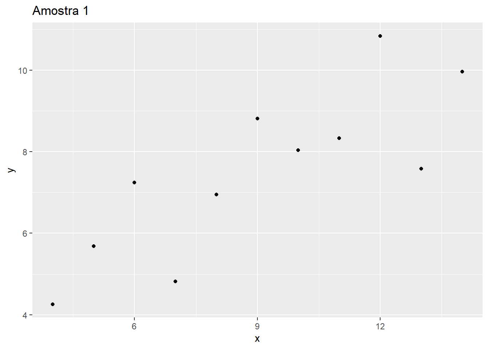
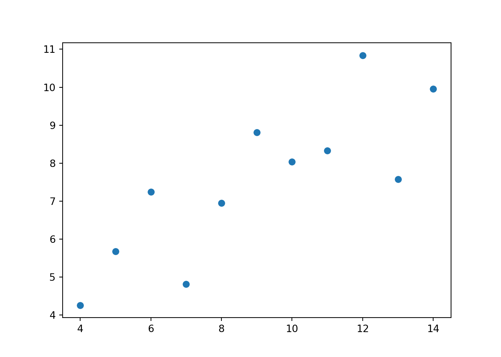
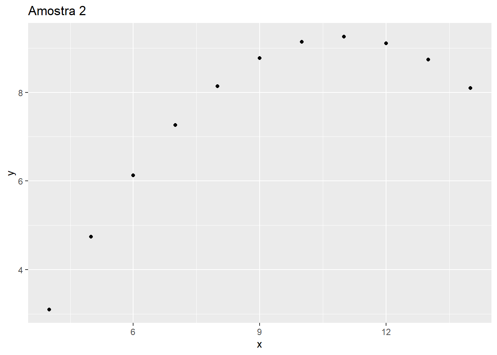
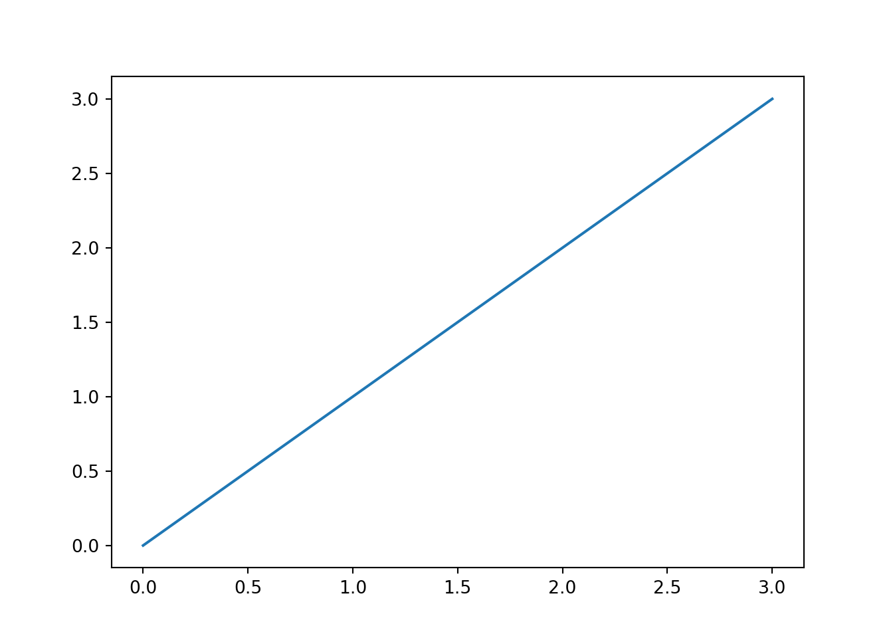

Capítulo 3 Análise exploratória dos dados
3.1 Introdução
Um dos pioneiros na definição da área de análise exploratória de dados (em inglês Estatistical Data Analisys, ou EDA) foi Tukey (1997) (Tukey et al. 1977). Tukey (1997) argumenta que seu foco, até aquele momento, estava em desenvolver novas técnicas para inferência. Porém, depois de reflexão, ele chega a conclusão de que o foco dele, e de outros estatísticos, seria melhor aplicado no desenvolvimento de técnicas para a etapa de preparação desses dados. Era nos procedimentos de estruturar os dados que estava o verdadeiro desafio. Problemas, tais como, lidar com dados faltantes ou outliers, traziam impactos negativos na inferência e novas técnicas nessa etapa precisavam ser estudadas. Sua recomendação era uma mudança de paradigma e novos estudos, voltando mais para a preparação dos dados. Sua visão é de que isso iria trazer enorme avanços como um todo. O que de fato aconteceu.
Podemos considerar essa necessidade de estudos anterior ao processo de inferência analisando o exemplo criado por Ancobe.
R
##
## Attaching package: 'data.table'## The following objects are masked from 'package:lubridate':
##
## hour, isoweek, mday, minute, month, quarter, second, wday, week,
## yday, year## The following objects are masked from 'package:dplyr':
##
## between, first, last## The following object is masked from 'package:purrr':
##
## transposex <- c(10, 8, 13, 9, 11, 14, 6, 4 , 12, 7, 5)
y <- c(8.04, 6.95, 7.58, 8.81, 8.33, 9.96, 7.24, 4.26, 10.84, 4.82, 5.68)
DT = data.table(x, y)
ggplot(DT, mapping = aes(x = x, y =y)) +
geom_point() +
labs(title = "Amostra 1")
Python
import matplotlib.pyplot as plt
x = [10, 8, 13, 9, 11, 14, 6, 4 , 12, 7, 5]
y = [8.04, 6.95, 7.58, 8.81, 8.33, 9.96, 7.24, 4.26, 10.84, 4.82, 5.68]
plt.scatter(x, y)
plt.show()
Veja a imagem “Amostra 1” acima. Nela visualmente percebemos uma relação linear direta entre as duas variáveis, podemos confirmar isso analisando o gráfico de pontos e o valor da correlação, abaixo.
R
## [1] 0.8164205Python
## 0.81642051634484Para os dados da Amostra 1, acima temos uma correlação de 0.81.
R
x <- c(10, 8, 13, 9, 11, 14, 6, 4 , 12, 7, 5)
y <- c(9.14, 8.14, 8.74,8.77,9.26,8.1,6.13,3.1,9.11,7.26,4.74)
DT = data.table(x, y)
ggplot(DT, mapping = aes(x = x, y =y)) +
geom_point() +
labs(title = "Amostra 2")
Python

Na amostra 2 percebemos uma relação em forma de curva, quando verificamos a correlação verificamos o mesmo valor de 0.81 dos dados da amostra 1.